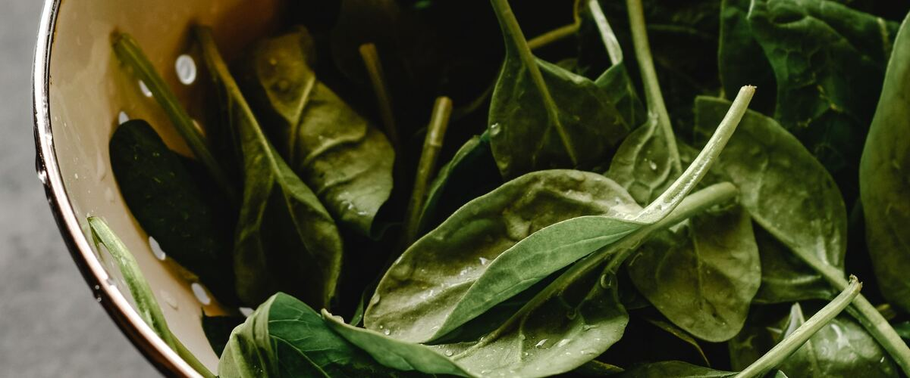

When to plant spinach in Portland, OR
Plant spinach from seed, directly in the garden in Portland, Mar 1 – Apr 5. For a fall harvest, plant again Aug 20 – Sep 10.
- Difficulty
- Moderate
- Sun
- Full sun to part shade
- Spacing
- 3 inches apart
- Planting depth
- ½ inch deep
- Frost
- Handles light frost
- First harvest
- About 45 days after planting
Why these dates
Portland's typical last spring frost is March 13. As a cool-season crop that handles light frost, this crop doesn't need to wait for that date. In the west-side valleys, though, the soil usually isn't ready to work until about March 1.
West-side valleys. The Willamette Valley, Puget Sound and southern Oregon valleys. Long frost-free seasons, but soil stays cold and wet into May, so warm crops wait for warm soil, not just the last frost.
How to grow spinach in Portland
- Prepare the bed: loosen the soil and mix in an inch or two of compost.
- Plant seeds Mar 1 – Apr 5, ½ inch deep, 3 inches apart.
- Keep the soil evenly moist until sprouts appear, which can take one to three weeks in cool soil.
- Plant again Aug 20 – Sep 10 for a fall harvest.
- Harvest: Cut outer leaves once plants have five or six, or cut the whole plant before it sends up a flower stalk.
Key numbers
- 14 hours (late April)Bolts when days pass
- 35–75°F; poor above 85°FSoil to sprout
- 6.5–7.5Soil pH
- The teens °F, with coverHardy to
- Fall and overwinteredBest crop
- 10–14 days coldKeeps
How it works
The plant biology behind the advice above, in plain language.
Why spinach bolts
Spinach is a long-day plant: once the days get longer than about 14 hours, it starts making flowers instead of leaves. In Portland and Seattle that happens around late April, and warm weather speeds it up. That's why spring spinach has a short window, and why fall and overwintered crops are often the best ones here.
Sow as early in spring as the soil can be worked, choose slow-bolting varieties, and harvest whole plants once they start to stretch upward.
Germination and temperature
Spinach sprouts in soil as cool as 35 to 45°F, best around 70°F, and very poorly above about 85°F. For a fall crop, sow in late summer once the soil has cooled, or water and shade the seedbed to keep it cool. Established plants are very cold hardy, surviving temperatures into the teens with some cover, and fall-sown spinach often grows again in February west of the Cascades.
Soil pH matters more than for most greens
Spinach is unusually sensitive to acidic soil. Below a pH of about 6.0, seedlings tend to grow slowly and turn yellow. It grows best at a pH of 6.5 to 7.5. Many west-side soils are acidic, so if spinach has struggled before, test the soil and add lime as needed. It also likes plenty of nitrogen and steady moisture.
Pests and diseases
Downy mildew causes yellow patches on top of leaves with grayish-purple fuzz underneath, especially in cool, damp weather. Many newer varieties are bred to resist it. Leaf miners tunnel through leaves; row cover keeps the flies out. And slugs love young spinach.
Harvest and storage
Pick outer leaves once plants have five or six, or cut the whole plant an inch above the soil and let it regrow. Spinach keeps best near freezing with high humidity, bagged in the fridge, where it lasts about 10 to 14 days.
Common questions
When is the last frost in Portland, OR?
Typically March 13. In 9 years out of 10, frost is over by April 1. These are 1991–2020 NOAA climate normals for Portland International Airport.
Is it too late to plant spinach in Portland?
The spring planting window runs through April 5. If you miss it, plant again for fall from August 20 to September 10.
How long until I can harvest spinach?
About 45 days after planting. Cut outer leaves once plants have five or six, or cut the whole plant before it sends up a flower stalk.
Why does my spinach bolt so quickly?
Spinach starts flowering once days get longer than about 14 hours, which happens in late April in Portland and Seattle, and warm weather speeds it up. Sow very early in spring, choose slow-bolting varieties, and grow your main crop in fall.
Can spinach grow through the winter?
Yes, west of the Cascades. Spinach sown in late summer or early fall survives temperatures into the teens with a little cover, slows down in midwinter, and grows again in late winter.
Why are my spinach seedlings yellow?
Acidic soil is a common cause. Spinach grows best at a pH of 6.5 to 7.5, and many Northwest soils are lower. Test your soil and lime if needed. Waterlogged soil and a lack of nitrogen can also cause it.
Also plant in Portland around the same time
Planting dates for spinach in nearby areas
- Gresham, OR Mar 1 – Apr 5
- Wilsonville and Canby, OR Mar 1 – Apr 5
- Salem, OR Mar 1 – Apr 5
- Eugene, OR Mar 1 – Apr 5
- Roseburg, OR Mar 1 – Apr 5
- Medford, OR Mar 1 – Apr 5